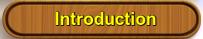
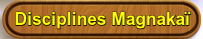

Au départ de votre aventure, vous êtes vêtu d'une tunique et d'une cape de Seigneur Kaï, toutes deux de couleur verte. Le matériel dont vous disposez pour assurer votre survie est par ailleurs réduit au minimum. Vous possédez une Hache (inscrivez-la dans la case Armes de votre Feuille d'Aventure) et un Sac à Dos qui contient un Repas (Notez-le dans la case Repas de votre Feuille d'Aventure). Vous disposez également, accrochée à votre ceinture, d'une Bourse de Cuir qui contient des Pièces d'Or. Pour savoir combien de pièces sont en votre possession, utilisez la Table de Hasard à la manière qui vous a été expliquée précédemment ; le chiffre que vous obtiendrez représentera le nombre de Couronnes (c'est le nom de la monnaie en cours dans ces régions) dont vous disposez au début de votre mission (inscrivez ce nombre dans la case Pièces d'Or de votre Feuille d'Aventure). Dans les ruines fumantes du monastère détruit, vous avez découvert une Carte Géographique qui vous permet de vous orienter (inscrivez-la dans la case Objets Spéciaux de votre Feuille d'Aventure). Cette carte est soigneusement rangée dans une poche intérieure de votre tunique. Vous avez également découvert l'un des objets suivants :
Pour savoir quel est l'objet que vous avez découvert dans la liste ci-dessus, utilisez la Table de Hasard. Le chiffre qu'elle vous donnera vous renverra à l'objet en question. Notez-le ensuite sur votre Feuille d'Aventure, dans la case indiquée entre parenthèses, et modifiez s'il y a lieu votre total d'ENDURANCE.
A présent que vous disposez de votre équipement, il vous faut savoir comment il se répartit afin que vous puissiez le transporter plus aisément. Il n'est pas nécessaire de prendre des notes à ce sujet, vous vous contenterez, en cas de besoin, de vous référer aux indications données dans la liste ci-dessous.
1 Armes Vous ne pouvez pas emporter plus de deux armes. Objets contenus dans votre Sac à Dos Ils doivent obligatoirement être rangés dans le Sac à Dos, mais la place y est comptée et vous ne pouvez y transporter que huit objets (Repas inclus).
Les objets spéciaux ne sont pas rangés dans votre Sac à Dos. Lorsque vous aurez la possibilité d'acquérir l'un de ces objets spéciaux, il vous sera indiqué de quelle manière il convient de le transporter.
Elles sont toujours rangées dans la bourse attachée à votre ceinture. Cette bourse ne peut pas contenir plus de cinquante Pièces d'Or en tout.
Vous transportez votre nourriture dans votre Sac à Dos et chaque Repas compte pour un objet.
Tous les objets qui peuvent vous être utiles et que vous aurez la possibilité d'acquérir au cours de votre aventure sont indiqués avec leur initiale en lettre capitale. Chaque fois que vous déciderez d'emporter l'un de ces objets avec vous, il vous faudra l'inscrire sur votre Feuille d'Aventure. Ces acquisitions seront rangées dans votre Sac à Dos sauf s'il vous est spécifié qu'il s'agit d'un Objet Spécial.
Les armes vous aident à combattre vos ennemis. Si vous avez choisi la discipline de la Maîtrise des Armes et que vous disposez de l'arme qui vous a été attribuée par la Table de Hasard, vous aurez le droit d'ajouter 2 points à votre total d'HABILETÉ. Si vous êtes obligé de combattre sans arme, vous devrez déduire 4 points de votre total d'HABILETÉ et vous battre à mains nues. Si vous découvrez une arme au cours de votre aventure, vous pouvez la garder et l'utiliser, mais rappelez-vous que vous n'avez pas le droit de posséder plus de deux armes à la fois.
Au cours de votre quête, vous découvrirez divers objets qui pourraient se révéler utiles et que vous souhaiterez peut-être conserver (rappelez-vous que vous ne pouvez transporter que huit objets dans votre Sac à Dos). Vous avez le droit à tout moment d'échanger l'un de ces objets ou tout simplement de vous en débarrasser, mais il vous est interdit de le faire lorsque vous êtes engagé dans un combat.
Chacun de ces objets possède des propriétés bien particulières. Parfois, ces propriétés vous seront décrites au moment même de la découverte de l'objet, d'autres fois, il vous faudra attendre qu'elles se révèlent au cours de votre aventure. Pour vous aider à trouver votre chemin, vous disposez d'une carte que vous avez sauvée des cendres du monastère détruit.
La monnaie en cours dans le royaume est la Couronne qui se présente sous la forme d'une petite pièce d'or. Au cours de votre aventure, vous pourrez utiliser ces Couronnes pour vos frais de transport ou de nourriture, mais également, si besoin est, pour corrompre certains personnages peu scrupuleux. Nombre de créatures que vous serez amené à rencontrer possèdent des Couronnes d'or. Chaque fois que vous tuerez l'une de ces créatures, vous aurez le droit de vous emparer de ses pièces d'or et de les conserver dans votre bourse.
Tout au long de votre quête, vous aurez besoin de vous nourrir à intervalles réguliers. S'il ne vous reste plus de vivres lorsque vous serez dans l'obligation de prendre un repas, vous perdrez 3 points d'ENDURANCE. Mais si vous avez choisi, parmi les Disciplines Kaï, celle de la chasse, vous n'aurez pas à rayer un Repas de votre liste d'équipement chaque fois que vous devrezmanger. La Potion de Guérison Elle vous rend 4 points d'ENDURANCE lorsque vous la buvez après un combat. Mais vous ne disposez que d'une seule dose. Si au cours de votre aventure, vous venez à découvrir d'autres potions, leurs effets vous seront indiqués en temps utile. Toutes les Potions de Guérison doivent être rangées dans votre Sac à Dos.
 